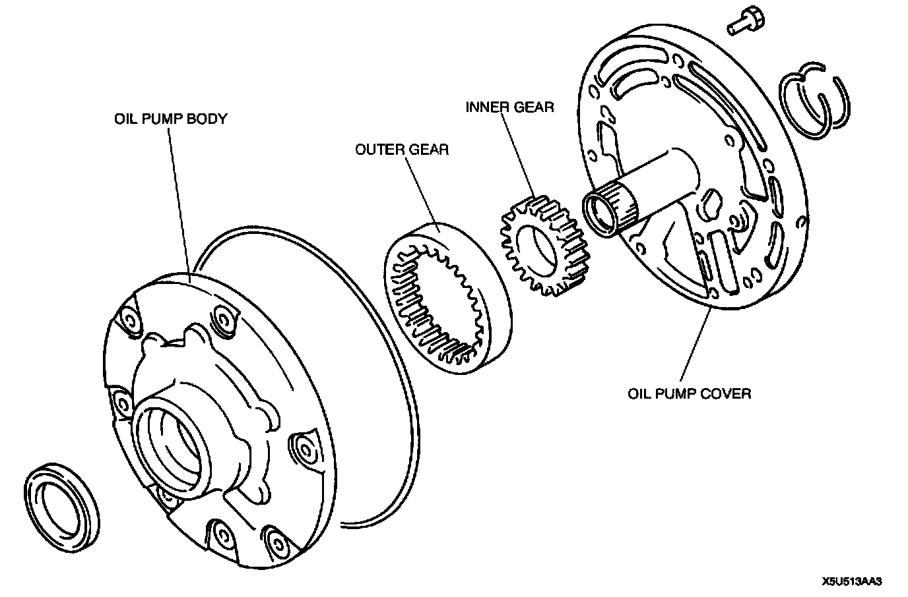

Fluid Pump: Description and Operation
Oil Pump DescriptionOutline
- The oil pump feeds oil to the torque converter, lubricates the powertrain, and maintains operating pressure for the hydraulic control system.
Construction
- The outer gear and inner gear are integrated in the oil pump housing, and they are offset with one part of the gear engaged.
- The inner gear is engaged on the end of the torque converter.
- Due to this, when the crankshaft rotates, the drive plate, torque converter, inner gear, and outer gear all rotate together as a single unit.
Operation

- When the inner gear and outer gear rotate, the fluid drawn up through the oil strainer is sent by the inner gear and outer gear to the control valve.